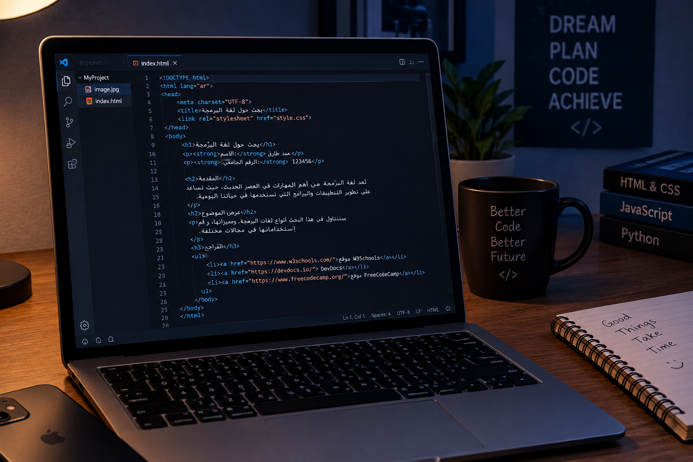

اسم الطالب: محمد طارق عطيه حسن
الرقم الجامعي: 2500049
المقرر: تطبيقات الإنترنت والمنصات الإلكترونية
تعتبر صفحات الويب من أهم وسائل التواصل وتبادل المعلومات في العصر الحديث. وتستخدم لغات البرمجة المختلفة في تصميم وتطوير هذه الصفحات. وتعد لغة JavaScript من اللغات المهمة التي تساعد على إضافة التفاعل إلى صفحات الويب.
JavaScript هي لغة برمجة تستخدم في تطوير مواقع الويب، وتساعد على جعل صفحات الإنترنت أكثر تفاعلاً مع المستخدم، ويمكن استخدامها لإنشاء الأزرار التفاعلية والنماذج والألعاب البسيطة.
تساعد JavaScript على تحسين تجربة المستخدم داخل المواقع الإلكترونية، حيث يمكنها تغيير محتوى الصفحة والتفاعل مع المستخدم دون الحاجة إلى إعادة تحميلها بالكامل.

| اللغة | الاستخدام |
|---|---|
| HTML | بناء هيكل صفحة الويب |
| CSS | تنسيق شكل الصفحة |
| JavaScript | إضافة التفاعل والحركة |